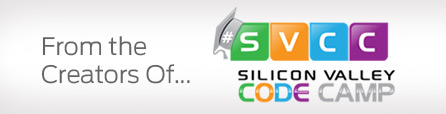
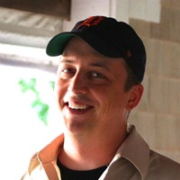
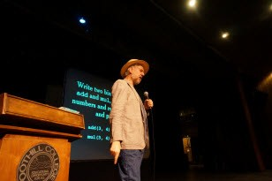
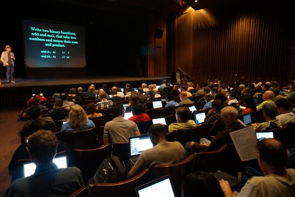
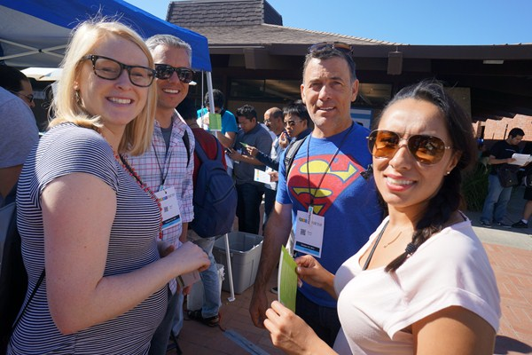
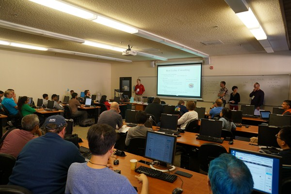
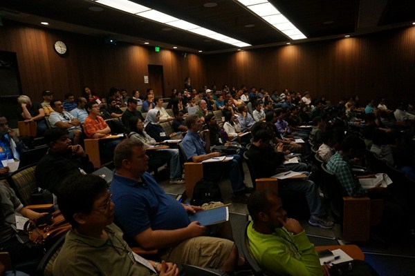
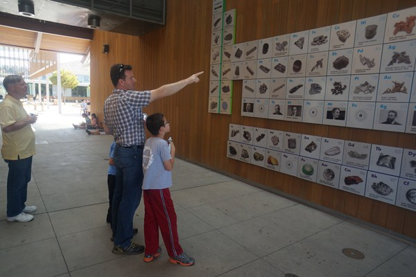
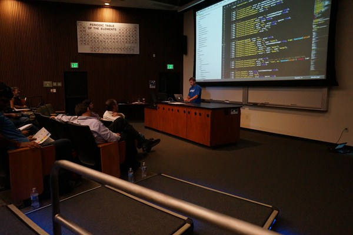
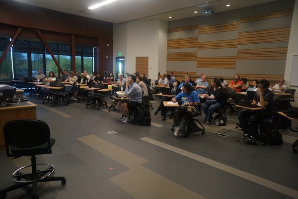

Learn from thestars of Code Camp.
All-day workshops led by top instructors from Silicon Valley Code Camp. Leave with applicable knowledge to build real applications, not just an idea of the new technology.
About Code Stars Summit
Code Stars Summit is built on top of Silicon Valley Code Camp, the premier free conference of sessions in the world now going on its 9th year. Code Stars Summit, unlike Code Camp are all-day workshops led primarily by top instructors from code camp and others of equal stature. Expect after coming to this event to not just have an idea about the new technology taught, but to leave the dedicated instruction with the right applicable knowledge to build applications.

Star Presenters
MongoDB Crash Course
MongoDB is the to go-to database for many organizations. While it is easy to set up, it is a serious database, requiring care and knowledge to run successfully in production. This workshop will show you how to set up and use MongoDB like a champ!
Developing a Design Sense for your Code
We are going to use some cutting edge training to train your pattern recognition section of your brain to instantly recognize common reoccurring anti-pattern in your code. After you see them, we will learn to fix them.
Learn The Go (golang) Programming Language & Web Dev With Go
Build Web Apps that easily scale to millions of individuals with Google’s Go language (Golang). You will leave with resources and code samples to start making all of your software and apps really go.
Getting Better with C#: Interfaces & Dependency Injection
Loosely coupled code is easier to maintain, extend, and test. Interfaces and Dependency Injection (DI) help us get there. Join Pluralsight author and international speaker Jeremy Clark to learn how to use interfaces and DI effectively in our code.
Rock Your Technical Interview
Have you ever not gotten a job because you weren’t prepared for the interview? Would you like a big raise? Do you need motivation to rock your career? I’ve interviewed 100’s of software developers and will share my knowledge on how to survive.
Hands on with Microsoft Azure
In this workshop, we'll show how you can use Azure services to build and manage scalable, reliable cloud applications using a wide variety of languages, frameworks, and tools.
Learning iOS With Swift
Learn to write iOS apps in the Swift programming language. This workshop will introduce iOS development with examples written in Swift. Course content ranges from simple apps to more advanced user interfaces and submitting to the app store.
Managing Software People and Teams
A 1 day workshop that will give you the tools, insights, and confidence to manage programmers and programming teams effectively. Learn how to turbocharge your career and deliver outstanding results for your company!
Coding interviews: Get awesome at Recursion and Dynamic Programming
Coming off of a short session in the Silicon Valley Code Camp, we'll continue our journey into Recursion. We'll start with simple problems, try to identify patterns and then go into harder problems.

Thinking Reactively With RxJS 5
Learn the basics of reactive programming with RxJS and Observables.
Package, Deploy, Scale Your Applications Using Docker and Kubernetes
This tutorial shows how to package, deploy, and scale Java applications with Docker and Kubernetes.
No workshops match that search.
What are the workshop topics?
Topics are selected based on what people are most attracted to at Silicon Valley Code Camp. Expect that most workshops will be lead by top Silicon Valley Code Camp speakers. Each of the workshops (either one or more days long) will be of limited size (typically 25 to 45 students per track).
Where was Code Stars Summit held?
Evergreen Valley College
3095 Yerba Buena Rd
San Jose, CA 95135

Code Camp”Douglas Crockford, seen here
teaching JavaScript Patterns






